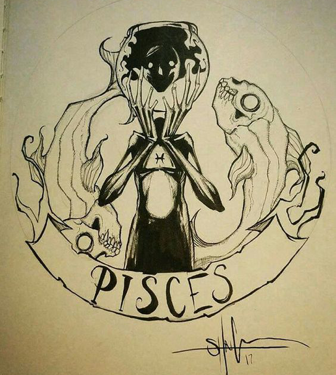
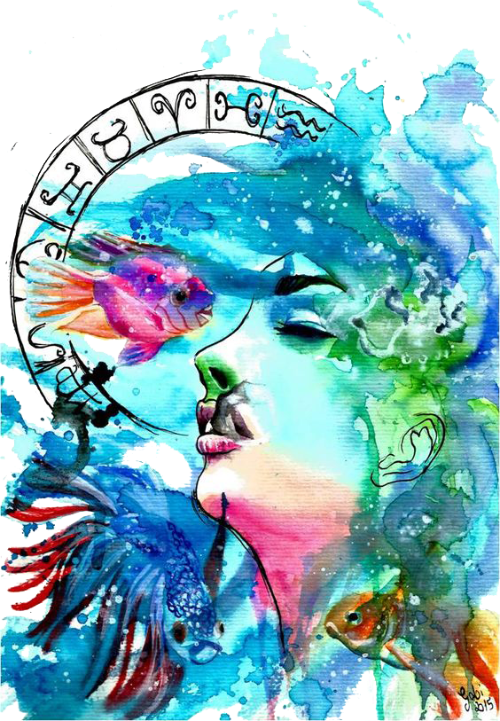

You’re a romantic sign, Pisces, and you love to be in love—at least, in theory. Ruled by Neptune, planet of fantasy, you want to be swept away by romance. Glamorous Pisces rules the imagination, and you have a way of making everything feel tinged with magic and fantasy. You’re gentle, nurturing and sensitive, and your mates rely on you to soften the rough edges.
 The fish is the symbol given to this sign, primarily because fish live in a secretive and mysterious place. Pisces tend to be daydreamers, often dreaming up brilliant ideas and plans which they are unable to facilitate themselves. They have a happy and vibrant inner life that few get to share or see. They are deeply caring about others and don’t like to see people become unhappy.
Pisces are empathetic people, often feeling badly for someone whose life is not going well. They feel the need to reach out to those who are less fortunate and will often find themselves involved in drama that they hadn’t intended. They are kind, caring individuals who feel everything deeply, even though you would not know it on the surface.